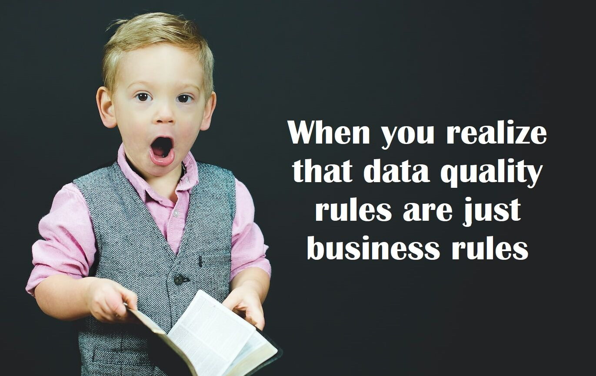

Repost Linkedin : https://www.linkedin.com/posts/yacine-bekka_data-dataquality-datamanagement-activity-7010884645273673728-YOrQ?utm_source=share&utm_medium=member_desktop
Do you struggle with data quality rules ? Let me share with you how i deal with definition of data quality rules :
First, let’s think about hashtag#data as a digital representation of a “thing”. In a company context those “things” are usually objects that are being manipulated during the business processes of the company (i.e : Customer, Location, Material, Invoices, etc).
Those “things” have different characteristics being represented by attributes (if we stay with Customer example the attributes could be First Name, Last Name, Address, etc).
A high hashtag#dataquality means the business data object(s), stored in our information systems are :
-
✅ An accurate representation of those “things”
-
✅ Fit for the usage that we make of it as part of the business processes.
To improve data quality, we need to define what are the expectations for the characteristics of those business objects for them to be as such.
Simply put, it means that we need to define the business rules of our objects and to measure through data quality indicators if our business objects are indeed compliant with those rules or not (on paper it sounds trivial doesn’t it ? 😁)
Let’s make an example with the Invoice business objects of a retail clothing company :
By definition an invoice should have some mandatory characteristics (Issuer Name, Goods delivered and prices, VAT Number, etc), if an invoice doesn’t have one of those, it’s not a valid invoice ➡ Business Rules n°1
An invoice should be always associated to a Customer ➡ Business Rules n°2
The list goes on ….
Based on those business rules, you define your DQ indicators (rate of incomplete invoice, rate of invoice not associated to a customer). Collection of all those rules with associated indicators is what i call a data quality standards and should be what’s monitored on regular basis by your data quality management process.
Original picture from Ben White on Unsplash
